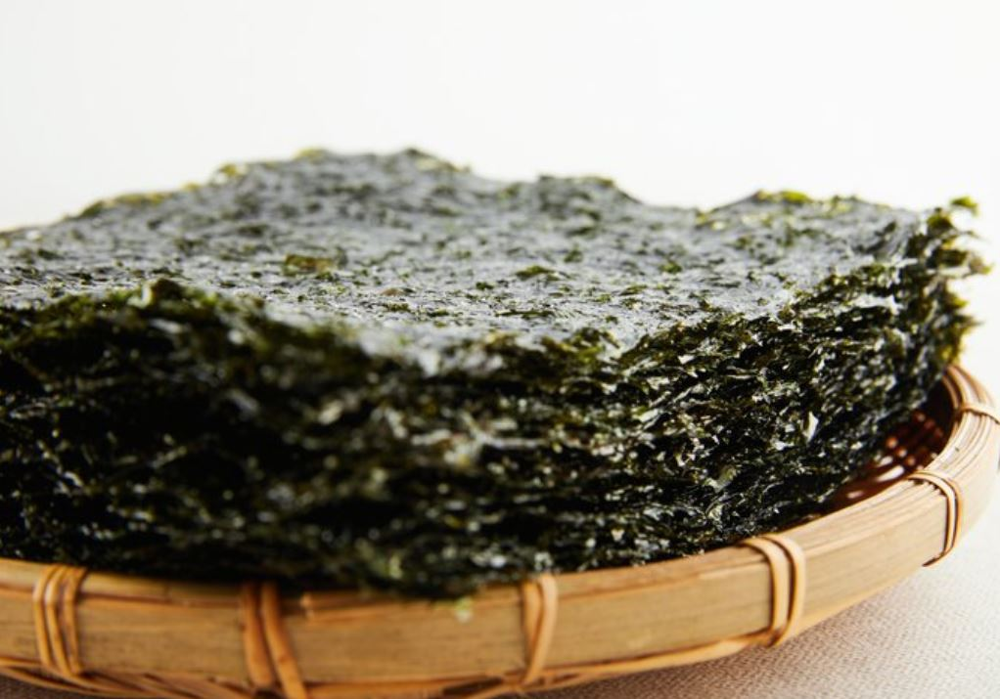
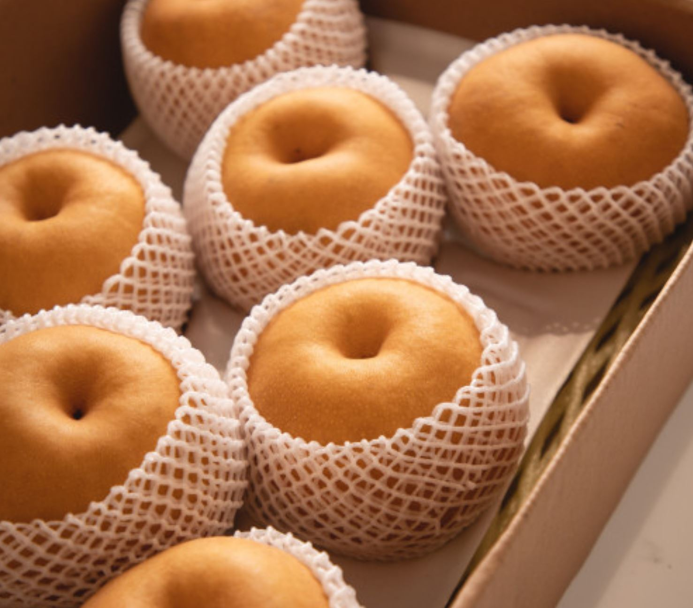
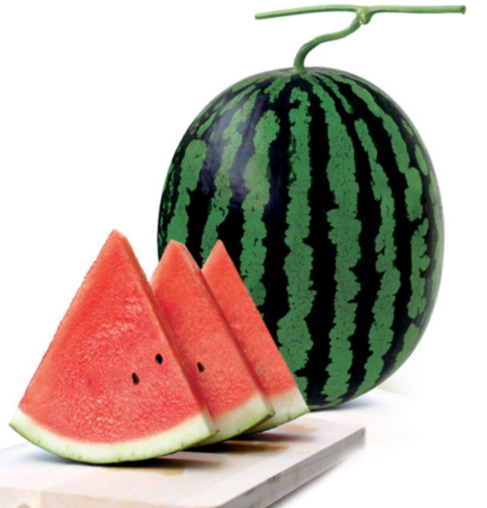

상품명 : 김
원산지 : 전라남도 완도
완도 김은 김 성장에 적합한 해양환경에서 자라 유해요소가 적고, 김의 상태도 좋다
구매링크

상품명 : 배
원산지 : 전라남도 나주
나주배는 오랜 기술의 축적으로 당도가 높고 맛이 뛰어나다.
구매링크

상품명 : 수박
원산지 : 전라남도 무등산
무등산 수박은 재배조건이 까다로워 강한 광선, 높은 온도, 긴 일조시간 등이 받혀주지 않으면 길러내기 어렵다.
구매링크